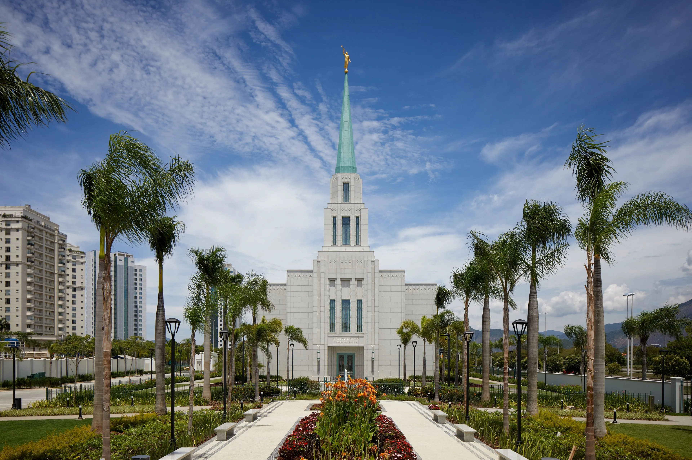

Make your reserve now!
Next to the temple.
Suitable environment for temple worship.
Comfortable rooms.
Free transfer to the temple (guests only).
Reserve!Temple Dedication: Rio de Janeiro - Brazil
The Rio de Janeiro Brazil Temple of The Church of Jesus Christ of Latter-day Saints will be dedicated in three sessions on Sunday, May 17, with a youth devotional the night before, on Saturday, May 16. The dedicatory sessions and youth devotional will be broadcast to all units in the Rio de Janeiro Brazil Temple District.
Temple Attending Activities
Baptism
In temples, faithful Church members are baptized for these people—a practice that also occurred in biblical times. Participants dress in white and are baptized by immersion on behalf of family members who have died without being baptized into His Church. Baptisms for the dead give the deceased the opportunity to choose whether or not to accept this baptism and to accept to follow Jesus Christ.
Endowment
The endowment ceremony teaches about God's love for all His children and His plan for their happiness. Participants make special promises to God, called covenants. They covenant to obey God's commandments and follow Jesus Christ. In return, God promises wonderful blessings in this life and the opportunity to live with Him as eternal families after this life.
Sealment
Wedding ceremonies called sealings also take place inside temples. God wants us to be happily ever after, so marriage and family relationships should last far beyond “till death do us part.” During the sealing in the temple, the bride and groom kneel and join hands at a simple altar. They promise to honor and love one another, and they pledge to follow Jesus Christ. In return, they are promised the sealing blessings of receiving all that the Father has, including marriage and family forever, even after death.
Recent Comments
- Mr. Thompson
It really was an amazing week. I loved the hotel accommodations and the peace I had not only in the temple but also in the hotel. The room I stayed in was very clean, the bed was comfortable and the breakfast was amazing.
Smith Family
The whole family loved the hotel. We stayed in an amazing room that accommodated the whole family, we didn't have to sleep apart and there were even features available for babies. The free transfer from the hotel to the temple helped us a lot.
Bonnie and Toddy
My fiance and I decided to stay at the hotel due to the excellent reviews and I can now say for myself that the hotel is indeed of excellent quality. The hotel brought us a feeling of peace and joy as if we were already in the temple. And I can't forget to mention that as soon as we arrived at the hotel, we had a special reception made for newlyweds.
Miss Rockfield
I was baptized last year and I always heard about temples. When the time finally came to visit the House of the Lord, I decided to stay where everyone told me would be the best place, and it really was. The breakfast was amazing, I was able to watch General Conference talks on TV, my transfer to the temple was free and I was able to find more ancestors names at the hotel itself.